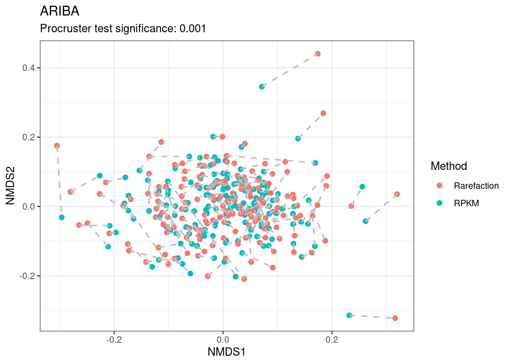

Last updated: 2022-09-03
Checks: 6 1
Knit directory: 2022_Rubio_MetaHIV/
This reproducible R Markdown analysis was created with workflowr (version 1.7.0). The Checks tab describes the reproducibility checks that were applied when the results were created. The Past versions tab lists the development history.
The R Markdown file has unstaged changes. To know which version of the R Markdown file created these results, you’ll want to first commit it to the Git repo. If you’re still working on the analysis, you can ignore this warning. When you’re finished, you can run wflow_publish to commit the R Markdown file and build the HTML.
Great job! The global environment was empty. Objects defined in the global environment can affect the analysis in your R Markdown file in unknown ways. For reproduciblity it’s best to always run the code in an empty environment.
The command set.seed(20220202) was run prior to running the code in the R Markdown file. Setting a seed ensures that any results that rely on randomness, e.g. subsampling or permutations, are reproducible.
Great job! Recording the operating system, R version, and package versions is critical for reproducibility.
Nice! There were no cached chunks for this analysis, so you can be confident that you successfully produced the results during this run.
Great job! Using relative paths to the files within your workflowr project makes it easier to run your code on other machines.
Great! You are using Git for version control. Tracking code development and connecting the code version to the results is critical for reproducibility.
The results in this page were generated with repository version ef31c92. See the Past versions tab to see a history of the changes made to the R Markdown and HTML files.
Note that you need to be careful to ensure that all relevant files for the analysis have been committed to Git prior to generating the results (you can use wflow_publish or wflow_git_commit). workflowr only checks the R Markdown file, but you know if there are other scripts or data files that it depends on. Below is the status of the Git repository when the results were generated:
Ignored files:
Ignored: .Rhistory
Ignored: .Rproj.user/
Ignored: output/aribaData/
Ignored: output/grootData/
Unstaged changes:
Modified: analysis/03_1_procruster.Rmd
Note that any generated files, e.g. HTML, png, CSS, etc., are not included in this status report because it is ok for generated content to have uncommitted changes.
These are the previous versions of the repository in which changes were made to the R Markdown (analysis/03_1_procruster.Rmd) and HTML (docs/03_1_procruster.html) files. If you’ve configured a remote Git repository (see ?wflow_git_remote), click on the hyperlinks in the table below to view the files as they were in that past version.
| File | Version | Author | Date | Message |
|---|---|---|---|---|
| Rmd | ef31c92 | Elisa | 2022-08-31 | procruster analysis |
| html | ef31c92 | Elisa | 2022-08-31 | procruster analysis |
library(tidyverse)
library(vegan)
library(glue)
library(patchwork)load("output/ariba_dist.RDA")
dist_rpkm<-ariba_dist$dist_rpkm
dist_rar<-ariba_dist$dist_rarset.seed(200889)
nmds_rpkm <- metaMDS(dist_rpkm, trymax = 200)Run 0 stress 0.2486241
Run 1 stress 0.2486688
... Procrustes: rmse 0.002921123 max resid 0.03232354
Run 2 stress 0.2496518
Run 3 stress 0.2486503
... Procrustes: rmse 0.002719418 max resid 0.03224038
Run 4 stress 0.2488234
... Procrustes: rmse 0.007291362 max resid 0.07156585
Run 5 stress 0.2487869
... Procrustes: rmse 0.006794286 max resid 0.07184174
Run 6 stress 0.2524771
Run 7 stress 0.2488573
... Procrustes: rmse 0.006489633 max resid 0.07181505
Run 8 stress 0.249641
Run 9 stress 0.2498946
Run 10 stress 0.2488563
... Procrustes: rmse 0.007030332 max resid 0.07164832
Run 11 stress 0.2496531
Run 12 stress 0.2486444
... Procrustes: rmse 0.001086834 max resid 0.01049294
Run 13 stress 0.2486165
... New best solution
... Procrustes: rmse 0.001823109 max resid 0.01580782
Run 14 stress 0.2516208
Run 15 stress 0.2486463
... Procrustes: rmse 0.002706895 max resid 0.03221644
Run 16 stress 0.2495862
Run 17 stress 0.2496288
Run 18 stress 0.2496519
Run 19 stress 0.2496403
Run 20 stress 0.2496276
Run 21 stress 0.2496206
Run 22 stress 0.2488673
... Procrustes: rmse 0.007399718 max resid 0.07282231
Run 23 stress 0.2495853
Run 24 stress 0.248661
... Procrustes: rmse 0.002746579 max resid 0.01708099
Run 25 stress 0.2486219
... Procrustes: rmse 0.003964028 max resid 0.0324174
Run 26 stress 0.2521572
Run 27 stress 0.2488223
... Procrustes: rmse 0.006993416 max resid 0.07150262
Run 28 stress 0.2516195
Run 29 stress 0.2497358
Run 30 stress 0.2486688
... Procrustes: rmse 0.003502512 max resid 0.03241606
Run 31 stress 0.2487983
... Procrustes: rmse 0.006555147 max resid 0.07182384
Run 32 stress 0.2524851
Run 33 stress 0.2486366
... Procrustes: rmse 0.001048524 max resid 0.01017185
Run 34 stress 0.2555006
Run 35 stress 0.2496753
Run 36 stress 0.249598
Run 37 stress 0.2498527
Run 38 stress 0.2486236
... Procrustes: rmse 0.001468441 max resid 0.0138458
Run 39 stress 0.2496434
Run 40 stress 0.2486153
... New best solution
... Procrustes: rmse 0.002063792 max resid 0.01539438
Run 41 stress 0.2496177
Run 42 stress 0.2486501
... Procrustes: rmse 0.004031909 max resid 0.03230329
Run 43 stress 0.2488374
... Procrustes: rmse 0.006479417 max resid 0.07109658
Run 44 stress 0.248648
... Procrustes: rmse 0.00379422 max resid 0.03246437
Run 45 stress 0.2487989
... Procrustes: rmse 0.006650748 max resid 0.07163662
Run 46 stress 0.2485952
... New best solution
... Procrustes: rmse 0.003123174 max resid 0.0281359
Run 47 stress 0.2496179
Run 48 stress 0.2485993
... Procrustes: rmse 0.002609177 max resid 0.01598843
Run 49 stress 0.2488179
... Procrustes: rmse 0.006568914 max resid 0.04940761
Run 50 stress 0.2486003
... Procrustes: rmse 0.002787066 max resid 0.01688265
Run 51 stress 0.252571
Run 52 stress 0.2486444
... Procrustes: rmse 0.002543317 max resid 0.0225465
Run 53 stress 0.2521781
Run 54 stress 0.2486575
... Procrustes: rmse 0.002879371 max resid 0.02241523
Run 55 stress 0.2495887
Run 56 stress 0.2496447
Run 57 stress 0.2538297
Run 58 stress 0.2487933
... Procrustes: rmse 0.006416604 max resid 0.07174248
Run 59 stress 0.2488231
... Procrustes: rmse 0.005430595 max resid 0.03551527
Run 60 stress 0.248787
... Procrustes: rmse 0.006307036 max resid 0.07176108
Run 61 stress 0.2488498
... Procrustes: rmse 0.007262086 max resid 0.07147648
Run 62 stress 0.2486001
... Procrustes: rmse 0.001334688 max resid 0.0123537
Run 63 stress 0.2486195
... Procrustes: rmse 0.003473106 max resid 0.0322677
Run 64 stress 0.2486009
... Procrustes: rmse 0.00133548 max resid 0.01133714
Run 65 stress 0.2496498
Run 66 stress 0.2496018
Run 67 stress 0.252158
Run 68 stress 0.2495107
Run 69 stress 0.2488737
... Procrustes: rmse 0.0068733 max resid 0.0709075
Run 70 stress 0.2494001
Run 71 stress 0.24864
... Procrustes: rmse 0.003625035 max resid 0.03230315
Run 72 stress 0.2486503
... Procrustes: rmse 0.003553089 max resid 0.03222672
Run 73 stress 0.2516169
Run 74 stress 0.2530142
Run 75 stress 0.2486667
... Procrustes: rmse 0.003695482 max resid 0.032119
Run 76 stress 0.2488551
... Procrustes: rmse 0.006994047 max resid 0.07123182
Run 77 stress 0.2584008
Run 78 stress 0.2496762
Run 79 stress 0.2488361
... Procrustes: rmse 0.007075583 max resid 0.07170399
Run 80 stress 0.2486129
... Procrustes: rmse 0.003251989 max resid 0.03220213
Run 81 stress 0.2495858
Run 82 stress 0.2486577
... Procrustes: rmse 0.002780676 max resid 0.02210813
Run 83 stress 0.2488315
... Procrustes: rmse 0.006731199 max resid 0.07153233
Run 84 stress 0.2488017
... Procrustes: rmse 0.006185718 max resid 0.07185708
Run 85 stress 0.252471
Run 86 stress 0.2495705
Run 87 stress 0.2498655
Run 88 stress 0.2614994
Run 89 stress 0.2496275
Run 90 stress 0.2492785
Run 91 stress 0.2522205
Run 92 stress 0.2486809
... Procrustes: rmse 0.004194738 max resid 0.03210151
Run 93 stress 0.2498381
Run 94 stress 0.2496289
Run 95 stress 0.2495731
Run 96 stress 0.2486479
... Procrustes: rmse 0.003617022 max resid 0.03237291
Run 97 stress 0.2486084
... Procrustes: rmse 0.002947629 max resid 0.01582554
Run 98 stress 0.2488222
... Procrustes: rmse 0.006804148 max resid 0.07139614
Run 99 stress 0.2486441
... Procrustes: rmse 0.002521016 max resid 0.02245277
Run 100 stress 0.2499326
Run 101 stress 0.2486242
... Procrustes: rmse 0.002292204 max resid 0.02240075
Run 102 stress 0.2498334
Run 103 stress 0.2521838
Run 104 stress 0.2486217
... Procrustes: rmse 0.003423801 max resid 0.03230238
Run 105 stress 0.2488803
... Procrustes: rmse 0.007604345 max resid 0.07235748
Run 106 stress 0.2487368
... Procrustes: rmse 0.004636401 max resid 0.02938056
Run 107 stress 0.2486215
... Procrustes: rmse 0.001645348 max resid 0.01148484
Run 108 stress 0.2485901
... New best solution
... Procrustes: rmse 0.002182744 max resid 0.0150749
Run 109 stress 0.2495314
Run 110 stress 0.2496289
Run 111 stress 0.2499284
Run 112 stress 0.2486369
... Procrustes: rmse 0.001752471 max resid 0.01218613
Run 113 stress 0.2516007
Run 114 stress 0.2488313
... Procrustes: rmse 0.00669984 max resid 0.07136366
Run 115 stress 0.2521884
Run 116 stress 0.2486444
... Procrustes: rmse 0.00261566 max resid 0.0163558
Run 117 stress 0.2497111
Run 118 stress 0.2496112
Run 119 stress 0.2496534
Run 120 stress 0.2526276
Run 121 stress 0.249606
Run 122 stress 0.2546151
Run 123 stress 0.2495932
Run 124 stress 0.2522212
Run 125 stress 0.2486474
... Procrustes: rmse 0.002837432 max resid 0.01735513
Run 126 stress 0.248798
... Procrustes: rmse 0.006240337 max resid 0.07167068
Run 127 stress 0.2486678
... Procrustes: rmse 0.003603712 max resid 0.02142735
Run 128 stress 0.2488284
... Procrustes: rmse 0.006541354 max resid 0.07127215
Run 129 stress 0.2486644
... Procrustes: rmse 0.003585861 max resid 0.02322158
Run 130 stress 0.2488313
... Procrustes: rmse 0.006686944 max resid 0.07138253
Run 131 stress 0.2487871
... Procrustes: rmse 0.006132028 max resid 0.07159345
Run 132 stress 0.2497169
Run 133 stress 0.2486504
... Procrustes: rmse 0.003653244 max resid 0.03229688
Run 134 stress 0.2496402
Run 135 stress 0.2486453
... Procrustes: rmse 0.002744412 max resid 0.01702244
Run 136 stress 0.2521843
Run 137 stress 0.2498905
Run 138 stress 0.2495118
Run 139 stress 0.2496592
Run 140 stress 0.2486199
... Procrustes: rmse 0.003439051 max resid 0.0324453
Run 141 stress 0.2498714
Run 142 stress 0.2554655
Run 143 stress 0.2576277
Run 144 stress 0.2488837
... Procrustes: rmse 0.007402338 max resid 0.07180761
Run 145 stress 0.2496845
Run 146 stress 0.2488271
... Procrustes: rmse 0.006512357 max resid 0.07117543
Run 147 stress 0.2486024
... Procrustes: rmse 0.001732091 max resid 0.01228617
Run 148 stress 0.2496064
Run 149 stress 0.2485824
... New best solution
... Procrustes: rmse 0.00139164 max resid 0.01222662
Run 150 stress 0.2496219
Run 151 stress 0.2497107
Run 152 stress 0.2494939
Run 153 stress 0.2486579
... Procrustes: rmse 0.003527908 max resid 0.02348126
Run 154 stress 0.2554263
Run 155 stress 0.2486507
... Procrustes: rmse 0.002849077 max resid 0.02296552
Run 156 stress 0.2496239
Run 157 stress 0.252274
Run 158 stress 0.2496285
Run 159 stress 0.248648
... Procrustes: rmse 0.003964182 max resid 0.0324543
Run 160 stress 0.2496327
Run 161 stress 0.248624
... Procrustes: rmse 0.002183667 max resid 0.0122757
Run 162 stress 0.2495764
Run 163 stress 0.2486484
... Procrustes: rmse 0.003990035 max resid 0.03238857
Run 164 stress 0.2488981
... Procrustes: rmse 0.007007727 max resid 0.07139182
Run 165 stress 0.2496414
Run 166 stress 0.2496838
Run 167 stress 0.2498145
Run 168 stress 0.2522437
Run 169 stress 0.2536471
Run 170 stress 0.2486838
... Procrustes: rmse 0.004469451 max resid 0.0322639
Run 171 stress 0.2485905
... Procrustes: rmse 0.001411635 max resid 0.01277791
Run 172 stress 0.2566782
Run 173 stress 0.2494983
Run 174 stress 0.2486007
... Procrustes: rmse 0.002403982 max resid 0.01642778
Run 175 stress 0.2516085
Run 176 stress 0.248826
... Procrustes: rmse 0.006614823 max resid 0.0716588
Run 177 stress 0.2486128
... Procrustes: rmse 0.002719913 max resid 0.03233591
Run 178 stress 0.2495769
Run 179 stress 0.2515942
Run 180 stress 0.2496279
Run 181 stress 0.2866409
Run 182 stress 0.2486653
... Procrustes: rmse 0.004114098 max resid 0.03234892
Run 183 stress 0.255283
Run 184 stress 0.2495121
Run 185 stress 0.2486167
... Procrustes: rmse 0.002376114 max resid 0.02298749
Run 186 stress 0.2496407
Run 187 stress 0.2486583
... Procrustes: rmse 0.003564421 max resid 0.02356894
Run 188 stress 0.2495729
Run 189 stress 0.2496031
Run 190 stress 0.4153581
Run 191 stress 0.2496202
Run 192 stress 0.2485825
... Procrustes: rmse 0.0002988261 max resid 0.002922017
... Similar to previous best
*** Solution reachednmds_rar <- metaMDS(dist_rar,trymax = 300)Run 0 stress 0.2619113
Run 1 stress 0.2663515
Run 2 stress 0.2628249
Run 3 stress 0.2659257
Run 4 stress 0.2667393
Run 5 stress 0.2659119
Run 6 stress 0.2652507
Run 7 stress 0.2649995
Run 8 stress 0.26807
Run 9 stress 0.2630216
Run 10 stress 0.2676921
Run 11 stress 0.2668683
Run 12 stress 0.2642287
Run 13 stress 0.2636477
Run 14 stress 0.2649377
Run 15 stress 0.2630149
Run 16 stress 0.2629411
Run 17 stress 0.2652922
Run 18 stress 0.2639293
Run 19 stress 0.2631395
Run 20 stress 0.2656054
Run 21 stress 0.2649506
Run 22 stress 0.2638554
Run 23 stress 0.2641061
Run 24 stress 0.2652255
Run 25 stress 0.2629343
Run 26 stress 0.2635708
Run 27 stress 0.2631568
Run 28 stress 0.2632603
Run 29 stress 0.2673913
Run 30 stress 0.2628132
Run 31 stress 0.261403
... New best solution
... Procrustes: rmse 0.01277512 max resid 0.1353138
Run 32 stress 0.2638687
Run 33 stress 0.2622321
Run 34 stress 0.2637198
Run 35 stress 0.2623248
Run 36 stress 0.268467
Run 37 stress 0.2616956
... Procrustes: rmse 0.01294493 max resid 0.1354777
Run 38 stress 0.263613
Run 39 stress 0.2624799
Run 40 stress 0.2663559
Run 41 stress 0.2659705
Run 42 stress 0.265052
Run 43 stress 0.2622839
Run 44 stress 0.2633224
Run 45 stress 0.2624134
Run 46 stress 0.2650945
Run 47 stress 0.267471
Run 48 stress 0.2645756
Run 49 stress 0.2660127
Run 50 stress 0.2695275
Run 51 stress 0.2621213
Run 52 stress 0.2619403
Run 53 stress 0.2676286
Run 54 stress 0.2656395
Run 55 stress 0.2653972
Run 56 stress 0.2674876
Run 57 stress 0.2624697
Run 58 stress 0.2636108
Run 59 stress 0.2625275
Run 60 stress 0.2666411
Run 61 stress 0.2631953
Run 62 stress 0.2642794
Run 63 stress 0.2638374
Run 64 stress 0.2670224
Run 65 stress 0.2642872
Run 66 stress 0.2669131
Run 67 stress 0.2682404
Run 68 stress 0.270731
Run 69 stress 0.2636212
Run 70 stress 0.2619043
Run 71 stress 0.2632383
Run 72 stress 0.2650398
Run 73 stress 0.2624012
Run 74 stress 0.2642586
Run 75 stress 0.2668323
Run 76 stress 0.2628252
Run 77 stress 0.263469
Run 78 stress 0.2653952
Run 79 stress 0.2737551
Run 80 stress 0.2634587
Run 81 stress 0.2672927
Run 82 stress 0.2655308
Run 83 stress 0.2643494
Run 84 stress 0.2640224
Run 85 stress 0.2627011
Run 86 stress 0.2657296
Run 87 stress 0.2640955
Run 88 stress 0.2650935
Run 89 stress 0.2643635
Run 90 stress 0.2683186
Run 91 stress 0.263896
Run 92 stress 0.2651167
Run 93 stress 0.2642118
Run 94 stress 0.2627869
Run 95 stress 0.2664999
Run 96 stress 0.2667343
Run 97 stress 0.2655911
Run 98 stress 0.2660326
Run 99 stress 0.2633105
Run 100 stress 0.2638775
Run 101 stress 0.2646964
Run 102 stress 0.271335
Run 103 stress 0.2621023
Run 104 stress 0.2656277
Run 105 stress 0.2636072
Run 106 stress 0.2642908
Run 107 stress 0.2670179
Run 108 stress 0.2625075
Run 109 stress 0.264662
Run 110 stress 0.2710363
Run 111 stress 0.2637335
Run 112 stress 0.2626955
Run 113 stress 0.2636347
Run 114 stress 0.2662765
Run 115 stress 0.2676997
Run 116 stress 0.2715145
Run 117 stress 0.263816
Run 118 stress 0.2625439
Run 119 stress 0.2696718
Run 120 stress 0.4152821
Run 121 stress 0.2643448
Run 122 stress 0.2646281
Run 123 stress 0.2630286
Run 124 stress 0.2627165
Run 125 stress 0.2692398
Run 126 stress 0.2638562
Run 127 stress 0.2654227
Run 128 stress 0.2636929
Run 129 stress 0.2672062
Run 130 stress 0.2706557
Run 131 stress 0.2681433
Run 132 stress 0.2643319
Run 133 stress 0.2640497
Run 134 stress 0.2668964
Run 135 stress 0.266996
Run 136 stress 0.2647942
Run 137 stress 0.2655672
Run 138 stress 0.2639812
Run 139 stress 0.2702994
Run 140 stress 0.2635895
Run 141 stress 0.2635635
Run 142 stress 0.2630351
Run 143 stress 0.2627683
Run 144 stress 0.2643252
Run 145 stress 0.2672547
Run 146 stress 0.2629086
Run 147 stress 0.2643285
Run 148 stress 0.2627418
Run 149 stress 0.2615559
... Procrustes: rmse 0.008454699 max resid 0.08725842
Run 150 stress 0.2674754
Run 151 stress 0.263486
Run 152 stress 0.2687966
Run 153 stress 0.2633925
Run 154 stress 0.2622899
Run 155 stress 0.2672705
Run 156 stress 0.2646097
Run 157 stress 0.2670994
Run 158 stress 0.2648076
Run 159 stress 0.2622008
Run 160 stress 0.2737985
Run 161 stress 0.2622715
Run 162 stress 0.2666893
Run 163 stress 0.2632926
Run 164 stress 0.2637294
Run 165 stress 0.2625706
Run 166 stress 0.2630908
Run 167 stress 0.2631483
Run 168 stress 0.2652529
Run 169 stress 0.2626382
Run 170 stress 0.2654044
Run 171 stress 0.2637134
Run 172 stress 0.2637931
Run 173 stress 0.2622894
Run 174 stress 0.265878
Run 175 stress 0.2740101
Run 176 stress 0.2633074
Run 177 stress 0.2634472
Run 178 stress 0.2650783
Run 179 stress 0.263425
Run 180 stress 0.2625728
Run 181 stress 0.2639657
Run 182 stress 0.2623863
Run 183 stress 0.2685989
Run 184 stress 0.261688
... Procrustes: rmse 0.0202769 max resid 0.2292296
Run 185 stress 0.2740467
Run 186 stress 0.2620907
Run 187 stress 0.2655957
Run 188 stress 0.2688839
Run 189 stress 0.2660106
Run 190 stress 0.2621055
Run 191 stress 0.26217
Run 192 stress 0.2622968
Run 193 stress 0.2645737
Run 194 stress 0.2632061
Run 195 stress 0.26604
Run 196 stress 0.2666462
Run 197 stress 0.2689634
Run 198 stress 0.2643884
Run 199 stress 0.2626125
Run 200 stress 0.2678388
Run 201 stress 0.2627867
Run 202 stress 0.2613869
... New best solution
... Procrustes: rmse 0.00271832 max resid 0.02046926
Run 203 stress 0.2672809
Run 204 stress 0.2693458
Run 205 stress 0.2625641
Run 206 stress 0.2627314
Run 207 stress 0.261324
... New best solution
... Procrustes: rmse 0.005162265 max resid 0.04230113
Run 208 stress 0.2644949
Run 209 stress 0.2665084
Run 210 stress 0.268816
Run 211 stress 0.2641298
Run 212 stress 0.2626306
Run 213 stress 0.2612716
... New best solution
... Procrustes: rmse 0.004826952 max resid 0.02250307
Run 214 stress 0.2638428
Run 215 stress 0.2627162
Run 216 stress 0.2646595
Run 217 stress 0.2643522
Run 218 stress 0.2727676
Run 219 stress 0.2632696
Run 220 stress 0.2624807
Run 221 stress 0.2644517
Run 222 stress 0.2640542
Run 223 stress 0.2718774
Run 224 stress 0.2635088
Run 225 stress 0.2650849
Run 226 stress 0.2637807
Run 227 stress 0.2622824
Run 228 stress 0.2661432
Run 229 stress 0.2616634
... Procrustes: rmse 0.01267847 max resid 0.1210603
Run 230 stress 0.2644541
Run 231 stress 0.2617553
... Procrustes: rmse 0.01148415 max resid 0.1348685
Run 232 stress 0.2646915
Run 233 stress 0.2637645
Run 234 stress 0.2696346
Run 235 stress 0.2628651
Run 236 stress 0.2667714
Run 237 stress 0.2618312
Run 238 stress 0.2635124
Run 239 stress 0.2636762
Run 240 stress 0.2621817
Run 241 stress 0.2623167
Run 242 stress 0.2763085
Run 243 stress 0.2656936
Run 244 stress 0.2625384
Run 245 stress 0.2680462
Run 246 stress 0.2667482
Run 247 stress 0.2669929
Run 248 stress 0.2673711
Run 249 stress 0.2635743
Run 250 stress 0.2667908
Run 251 stress 0.2668667
Run 252 stress 0.2714591
Run 253 stress 0.2710661
Run 254 stress 0.2721258
Run 255 stress 0.2648493
Run 256 stress 0.2689117
Run 257 stress 0.2682107
Run 258 stress 0.4153555
Run 259 stress 0.2659246
Run 260 stress 0.2649039
Run 261 stress 0.2630912
Run 262 stress 0.2625737
Run 263 stress 0.2636446
Run 264 stress 0.2655697
Run 265 stress 0.2647361
Run 266 stress 0.2824391
Run 267 stress 0.2631322
Run 268 stress 0.2623786
Run 269 stress 0.2644526
Run 270 stress 0.2663054
Run 271 stress 0.2623214
Run 272 stress 0.2625687
Run 273 stress 0.2626659
Run 274 stress 0.2684864
Run 275 stress 0.2632174
Run 276 stress 0.2654961
Run 277 stress 0.2673433
Run 278 stress 0.2659798
Run 279 stress 0.2661053
Run 280 stress 0.2630972
Run 281 stress 0.2621689
Run 282 stress 0.2626787
Run 283 stress 0.2690131
Run 284 stress 0.2705059
Run 285 stress 0.2636806
Run 286 stress 0.2668715
Run 287 stress 0.2660107
Run 288 stress 0.267085
Run 289 stress 0.2644502
Run 290 stress 0.26581
Run 291 stress 0.2675676
Run 292 stress 0.2631006
Run 293 stress 0.2619415
Run 294 stress 0.2624988
Run 295 stress 0.2671181
Run 296 stress 0.2700863
Run 297 stress 0.2646413
Run 298 stress 0.2637567
Run 299 stress 0.2659647
Run 300 stress 0.2677267
*** No convergence -- monoMDS stopping criteria:
58: no. of iterations >= maxit
242: stress ratio > sratmaxproc<-procrustes(nmds_rar, nmds_rpkm)
##plot(pro.test)
test<-protest(nmds_rar, nmds_rpkm)Null hipotesis: The degree of concordance between two (or more) matrices is no greater than expected given random inter-matrix associations.
Te procruster test is significant (Significance: 0.001), thus the null hipotesis is not confirmed and we can say that both matrices are concordant (statistically similar?)
pdata <- data.frame(
NMDS1=c(proc$Yrot[,1],proc$X[,1]),
NMDS2=c(proc$Yrot[,2],proc$X[,2]),
Method=c(rep("RPKM", 155), rep ("Rarefaction", 155)),
SampleID=c(rownames(proc$Yrot), rownames(proc$X)))
pdata%>%
ggplot(aes(x=NMDS1, y=NMDS2, color=Method)) +
geom_point(size=2)+
geom_line(aes(group=SampleID), colour="gray", linetype = 2, size=0.7)+
theme_bw()+
labs(caption = glue("Procruster test significance: {test$signif}"), title="Ariba")
| Version | Author | Date |
|---|---|---|
| ef31c92 | Elisa | 2022-08-31 |
sessionInfo()R version 4.1.2 (2021-11-01)
Platform: x86_64-pc-linux-gnu (64-bit)
Running under: Ubuntu 20.04.3 LTS
Matrix products: default
BLAS: /usr/lib/x86_64-linux-gnu/blas/libblas.so.3.9.0
LAPACK: /usr/lib/x86_64-linux-gnu/lapack/liblapack.so.3.9.0
locale:
[1] LC_CTYPE=es_ES.UTF-8 LC_NUMERIC=C
[3] LC_TIME=es_ES.UTF-8 LC_COLLATE=es_ES.UTF-8
[5] LC_MONETARY=es_ES.UTF-8 LC_MESSAGES=es_ES.UTF-8
[7] LC_PAPER=es_ES.UTF-8 LC_NAME=C
[9] LC_ADDRESS=C LC_TELEPHONE=C
[11] LC_MEASUREMENT=es_ES.UTF-8 LC_IDENTIFICATION=C
attached base packages:
[1] stats graphics grDevices utils datasets methods base
other attached packages:
[1] patchwork_1.1.1 glue_1.6.2 vegan_2.5-7 lattice_0.20-45
[5] permute_0.9-7 forcats_0.5.1 stringr_1.4.0 dplyr_1.0.8
[9] purrr_0.3.4 readr_2.1.2 tidyr_1.2.0 tibble_3.1.6
[13] ggplot2_3.3.5 tidyverse_1.3.1
loaded via a namespace (and not attached):
[1] httr_1.4.2 sass_0.4.1 jsonlite_1.8.0 splines_4.1.2
[5] modelr_0.1.8 bslib_0.3.1 assertthat_0.2.1 highr_0.9
[9] cellranger_1.1.0 yaml_2.3.5 pillar_1.7.0 backports_1.4.1
[13] digest_0.6.29 promises_1.2.0.1 rvest_1.0.2 colorspace_2.0-3
[17] htmltools_0.5.2 httpuv_1.6.5 Matrix_1.4-0 pkgconfig_2.0.3
[21] broom_0.7.12 haven_2.4.3 scales_1.1.1 whisker_0.4
[25] later_1.3.0 tzdb_0.2.0 git2r_0.30.1 mgcv_1.8-38
[29] generics_0.1.2 farver_2.1.0 ellipsis_0.3.2 withr_2.5.0
[33] cli_3.2.0 magrittr_2.0.2 crayon_1.5.1 readxl_1.3.1
[37] evaluate_0.15 fs_1.5.2 fansi_1.0.3 nlme_3.1-157
[41] MASS_7.3-56 xml2_1.3.3 tools_4.1.2 hms_1.1.1
[45] lifecycle_1.0.1 munsell_0.5.0 reprex_2.0.1 cluster_2.1.2
[49] compiler_4.1.2 jquerylib_0.1.4 rlang_1.0.2 grid_4.1.2
[53] rstudioapi_0.13 labeling_0.4.2 rmarkdown_2.13 gtable_0.3.0
[57] DBI_1.1.2 R6_2.5.1 lubridate_1.8.0 knitr_1.38
[61] fastmap_1.1.0 utf8_1.2.2 workflowr_1.7.0 rprojroot_2.0.2
[65] stringi_1.7.6 parallel_4.1.2 Rcpp_1.0.8.3 vctrs_0.3.8
[69] dbplyr_2.1.1 tidyselect_1.1.2 xfun_0.30